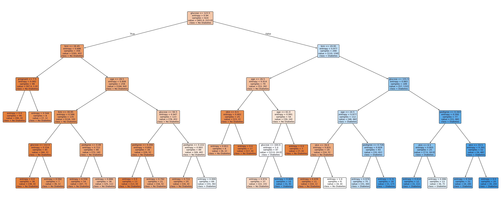
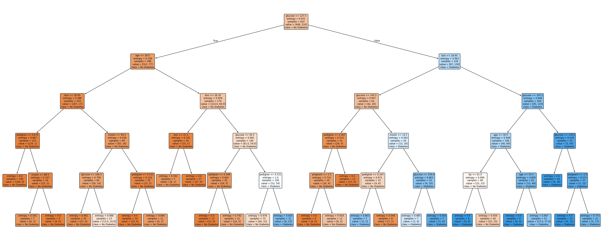

Predikce diabetu — Rozhodovací strom
Vliv parametrů na přesnost
Byly testovány různé kombinace hyperparametrů za účelem pochopení jejich vlivu na přesnost. Uvedená tabulka shrnuje zjištění od nejvíce ovlivňujících po nejméně ovlivňující.
| Parametr | Použitá hodnota | Vliv | Pozorovaný efekt |
|---|---|---|---|
max_depth |
5 |
Vysoký | Nejvýznamnější parametr. Bez omezení dochází k přeučení (overfittingu) stromu — dosahuje ~100% přesnosti na trénovacích datech, ale pouze ~68 % na testovacích datech. |
max_leaf_nodes |
30 |
Vysoký | Omezuje celkový počet listů, čímž strom prořezává (pruning) upřednostňováním nejčistších dělení. Společně s max_depth měly tyto dva parametry největší vliv na schopnost modelu generalizovat. |
min_samples_split |
7 |
Vysoký | Požadavek na alespoň 7 vzorků před rozdělením uzlu zabránil stromu v "učení se" šumu. Hodnoty nad 10 způsobily nedoučení, takže rozmezí 5–10 přineslo nejlepší výsledky. |
criterion |
entropy |
Střední | Přechod z výchozí hodnoty gini na entropii zlepšil přesnost zhruba o 0.5–1.0%. |
min_samples_leaf |
7 |
Nízký | Sám o sobě přesnost nijak znatelně nezměnil. Jeho hlavním efektem bylo vyhlazení grafu stromu, který se stal čitelnějším díky eliminaci nadbytečných listů. |
Přesnost a preciznost vs. velikost trénovací sady
Model byl trénován na všech 15 poměrech rozdělení trénovacích a testovacích dat (1/16 až 15/16). Byly vytvořeny dvě varianty: bez fixního náhodného seedu a s random_state=42. Zlat7 bod označuje nejlepší přesnost v daném běhu.


Nejlepší konfigurace a výsledky
Bylo využito všech 8 příznaků. Napříč všemi natrénovanými stromy se glukóza pokaždé objevuje jako kořenový uzel. BMI a věk jsou také důležité a konzistentně se objevují ve druhé a třetí úrovni. Příznaky pedigree a počet těhotenství přispívají v hlubších větvích. Inzulin, tloušťka kůže a krevní tlak mají nejmenší vliv.
DecisionTreeClassifier(
criterion = 'entropy',
max_depth = 5,
max_leaf_nodes = 30,
min_samples_split = 7,
min_samples_leaf = 7,
)
train_size ≈ 0.80 (nejvýkonnější oblast)
Při výběru nejlepšího modelu nebyl použit žádný fixní random_state. Při ověření mnoha opakovanými běhy se přesnost konzistentně pohybuje v rozmezí 74–78 % — výsledky jsou statisticky signifikantní.
Vizualizace rozhodovacího stromu
Oranžové uzly predikují Bez diabetu , modré uzly predikují Diabetes. Intenzita barvy odráží čistotu uzlu.

